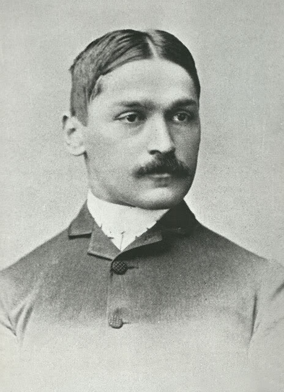

Поред патената објавио је више десетина научних расправа и 1923. године своју аутобиографију на енглеском језику From Immigrant to Inventor за коју је 1924.
године добио Пулицерову награду. На српском језику објављена је први пут 1929. године и то под насловом
"Са пашњака до научењака". Поред ове књиге објавио је још две:
Нова реформација: од физичке до духовне стварности (енгл. The New Reformation : from physical to spiritual realities; 1927)
Романса о машини (енгл. Romance of the Machine; 1930)
Остали радови које је самостално објавио:
Thermodynamics of reversible cycles in gases and saturated vapors: Full synopsis of a ten weeks undergraduate course of lectures (1902)
Serbian orthodox church, (South Slav, monuments) (1918)
Први пут на енглеском језику књига је објављена 1923. године у Њујорку, а годину дана касније, 1924. године књига је награђена Пулицеровом наградом.
Први пут на српском језику, у преводу М. Јевтића, књига је објављена 1929. године, у издању Матице српске из Новог Сада, под насловом
"Са пашњака до научењака". ,
Он није писао какве су га муке пратиле током борбе за интересе свог народа, али је у аутобиографији, коју је читала цела планета, имао циљ да Американцима
представи српски народ и српску мајку.